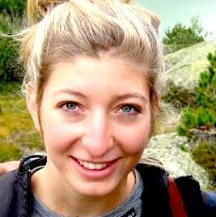

Current Members

|
Jacqueline Oehri, Postdoctoral Researcher
[e-mail: jacqueline.oehri@habitat-nature.com]
[e-mail: jacqueline.oehri@gmail.com]

|
Linking multispecies connectivity modelling and ecosystem services in the context of landscape urbanization
In light of the ongoing biodiversity crisis and increasingly fragmented urbanized landscapes, facilitating ecological connectivity of species habitats is crucial for effective conservation management.
Past approaches of ecological connectivity are manifold and often inconsistent regarding inferred management guidelines. Furthermore, they typically lack an adequate incorporation of species interactions, which can have important consequences for the movement and persistence of a multitude of species in the ecological network.
Therefore, in our project, we develop a methodological framework where we integrate multiple species interactions to assess and evaluate “multi-species connectivity” in urban and peri-urban landscapes. Specifically, we will identify key-indicators of ecological networks allowing the consistent and robust assessment of multi-species connectivity and evaluate recent changes thereof across Canada and further regions. Finally, we will implement our method into a replicable workflow that considers connectivity as well as other ecosystem services and that can be applied across spatial scales and landscape contexts.
This project is set up in close collaboration with the environmental research firm Habitat (habitat-nature.com) and co-supervised by Dr. Andrew Gonzalez (McGill University, co-founder of Habitat).
With this work we aim to support the design of effective conservation networks that sustain biodiversity across local, regional and national scales.
|
| |
|
|
Ana Catarina Avila Vitorino, Ph.D. Student
[e-mail: ana.avila@mail.mcgill.ca]
|
Predicting forest regrowth after agricultural abandonment: the effect of land use on secondary tropical forest resilience
Tropical forests play an important role as biodiversity hotspots and carbon sinks, but they face many ongoing threats. One of the biggest is the expansion of industrial agriculture. Cycles of burning and subsequent land abandonment after nutrient depletion have replaced old growth forest with young, secondary growth, which now makes up more than 50% of all tropical forests in the world.
During my Ph.D., co-supervised with Dr. Fiona Soper, I am studying agricultural practices in Panama and around the world and how they impact the recovery of rainforests after land abandonment. The main goal of my research is to predict the resilience of secondary forests given historical agricultural practices in their area. I intend to use remote sensing tools, a valuable resource to measure forest density at different stages of succession. Better knowledge of the consequences of agricultural practices on forest regrowth may help improve environmental policy and reforestation strategies.
|
| |
|
|
Jorge Manuel Morales-Saldaña, Ph.D. Student
[e-mail: jorge.morales@mail.mcgill.ca]
|
Drivers of Mangroves forest changes: their effects on ecosystem services and the role of the effectiveness of protected areas.
Advisors:
Brian Leung, McGill University (Main advisor)
Hector Guzman, Smithsonian Tropical Research Institute (co-supervisor)
I am a Ph.D. student in the Neotropical Environmental Option (NEO) program, Biology Department at McGill University. I am interested broadly in the conservation of coastal marine ecosystems. My Ph.D. research project focuses on mangrove ecosystems, which are one of the most valuable coastal habitats in the provision of multiple ecosystem services such as fisheries, coastal erosion control, retaining toxic pollutants, effective carbon sink, and cultural values. Despite these benefits, this ecosystem has been highly modified, with at least one-third of the global cover lost during the last decades. These changes are partly due to anthropogenic activities derived from terrestrial and marine realms, such as aquaculture and agriculture expansion, coastal development, urbanization, pollution, and industrialization, making this habitat one of the most vulnerable intertidal ecosystems in the tropics. During my Ph.D. I expect to gain a better understanding of the effects of stressors such as excess nutrients, land-use changes, and climate change on critical ecosystem services such as carbon sequestration and storage, biodiversity, and mangrove-associated fisheries (in particular fisheries that involve large predators such as Sharks and Rays). In addition, I will explore the role of protected areas in reducing the influences of these threats and promoting the structure and function of these ecosystems. This study will be done mainly in Panama, where mangroves are distributed on the country's Caribbean and Pacific coasts, and the effects of different anthropogenic impacts and climate change are evident. This Ph.D. thesis will employ different approaches such as surveys (interviews with local stakeholders), field sampling, predictive species distribution models, remote sensing, spatially explicit models, multivariate models, and decision-making scenarios. The data generated in this study will support the Panama Research and Integrated Sustainability Model (PRISM), a spatially explicit model for of sustainability of the country. The results of this study will improve our understanding of the effects of local human stressors and climate change on tropical mangroves to integrate this knowledge into new strategies for the sustainable management of mangrove ecosystems.
|
| |
|

|
Morgane Henry, Ph.D. Student
[e-mail: morgane.henry2@mail.mcgill.ca]
|
Dynamic of spruce budworm in the context of a single outbreak in Québec: impacts of landscape, dispersal and damages on forests
Spatially synchronous outbreaks of insects such as the spruce budworm (SBW) can significantly damage boreal and mixed-wood forests in North America. In terms of spatial scale, periodic outbreaks of SBW can cover more area than fire and logging combined also resulting in huge economical losses. A SBW outbreak is currently ongoing in Québec and although this species and its dynamic have been extensively studied for the last century, numerous questions remain unanswered. My research aims to better understand the spatial and temporal outbreak dynamics of SBW. The goal is to develop spatial models using demographic, environmental, and phenological data to investigate how environmental context and dispersal drive the spatial spread of a SBW outbreak in Québec and ultimately in other affected provinces. This project will contribute to a better understanding of complex population processes that lead to outbreaks of forest insect pests, and it will specifically improve the capacity to mitigate and forecast negative consequences of SBW outbreaks in North American forests.
|
| |
|
|
Andrew Sellers, Ph.D. Student
[e-mail: andrew.sellers@mail.mcgill.ca]
|
Temporal Fluxes in Nutrient Subsidy Supply: Effects of Seasonal Upwelling on Algal-Herbivore Interactions
Seemingly discrete ecosystems are often connected by spatial flows of materials and organisms that represent important resource subsidies for species in recipient systems, and may strongly influence community structure and trophic interactions. Early studies in tropical rocky intertidal habitats highlighted the role of top-down processes and local scale interactions in regulating community structure and dynamics, but ignored the potential influence of large scale oceanographic processes that deliver nutrient rich water to coastal ecosystems (i.e. marine upwelling). For my dissertation I will examine how nutrient subsidies from tropical upwelling events influence producer-herbivore interactions in rocky intertidal communities in the Pacific coast of Panama. The Pacific coast of Panama is divided into two broad regions: the upwelling Gulf of Panama in the east, and the non-upwelling Gulf of Chiriqui in the west. Such variation in exposure to seasonal upwelling events represents an ideal setting to examine how large scale oceanographic processes influence intertidal community structure and algal-herbivore interactions in the tropics. My research will shed new light on the processes that shape community structure and influence trophic interactions on tropical coasts.
|
| |
|
|
Shriram Varadarajan, M.Sc. Student
[e-mail: shriram.varadarajan@mail.mcgill.ca]
|
Modeling jaguar movement ecology: synthesizing dispersal and connectivity perspectives
|
| |
|
|
Noah Wightman, Ph.D. Student
[e-mail: noah.wightman@mail.mcgill.ca]
|
Correcting observer bias in species distribution models: an integrative model for Canadian vertebrates.
I am a PhD candidate in the Quantitative Life Sciences program broadly interested in modelling large scale ecological processes and biogeographic patterns. My current research project is focused on bias in species distribution models (SDMs). SDMs are valuable tools in ecology which relate species occurrences to environmental conditions and provide predictions for species distributions. However, these models are often built using presence-only sightings data (for instance e-bird), which has inherent observer bias and can result in misleading predictions. My aims are two-fold: to compare the effects of different existing methods of correcting for this observer bias, and to implement a correction method which integrates sightings, surveys, and expert opinion species checklists. To accomplish this, I am applying these bias correcting models to vertebrate species across Canada. This research will provide valuable insight into how we should apply SDMs in regions with extensive data poor areas such as Canada’s north.
|
| |
|
|
|
Previous Graduate Students
|
| |
| Charlotte Steeves |
M.Sc. student
Project Title: A generalized bioenergetic and toxicokinetic model for all seabirds
|
| Dat Nguyen |
M.Sc. student
Project Title: How well do species distribution models predict occurrences in exotic ranges?
|
| Emma Hudgins |
Ph.D. student
Project Title: Predicting forest pests: Generalized models for invasive species establishment, spread, and impacts
|
| Lidia Della Venezia |
Ph.D. student
Project Title: Predicting invasive species impact under limited data availability: single and multispecies risk assessment.
|
| Victoria Reed |
M.Sc. student
Project Title: Implications of hydropower and land use change for Antillean manatees in the lower Changuinola River, Panama : an integrative modelling analysis
|
| Anthony Sardain |
M.Sc. student
Project Title: Forecasting the global shipping network and the future of marine biological invasions |
| Johanna Bradie |
Ph.D. Student
Project Title: Using genetic and population characteristics to predict establishment success of NIS |
| Andrew Sellers |
M.Sc. student
Project Title: Higher ectoparasite richness and abundance in introduced red lionfish (Pterois volitans) at low latitudes: implications for biotic resistance and enemy release.
Published in: Sellers, A. J., Ruiz, G. M., Leung, B., & Torchin, M. E. (2015). Regional Variation in Parasite Species Richness and Abundance in the Introduced Range of the Invasive Lionfish, Pterois volitans. PloS one, 10(6), e0131075 |
| Corey Chivers |
Ph.D. Student
Project Title: Predictive invasion ecology and decisions under uncertainty. |
| Paul Edwards |
Ph.D. Student
Project title: Optimizing monitoring and eradication of invasive species: new frameworks and applications. |
| Ayaz Hyder |
Ph.D. Student
Project title: Influenza spread models: integrating epidemiological and dynamic simulation approaches. |
| Stefanie Kulhanek |
M.Sc. Student.
Project title: Investigating the use of invasion history, meta-analysis and niche-based models as tools for predicting the ecological impact of introduced aquatic species. |
| Erin Gertzen |
M.Sc. Student.
Project title:Assessing the relationship between propagule pressure and probability of establishment for aquatic invasive species using two novel approaches . |
| David Delaney |
Ph.D. Student
Project title: Monitoring, managing and modeling the spread of marine invasive species |
| Dominique Roche |
M.Sc. Student.
Enemy release and biological invasions: a community study on Nile Tilapia
Discovery, distribution, and eradication potential of the introduced mud crab, Rhithropanopeus harrisii, in the Panama Canal |
|
| |
|
Previous Undergraduate Students
|
| |
|
| Kasia Johnson |
Independent Project.
Connectivity modeling for jaguars. (2020-2021) |
| Xell Brunet |
Independent Project.
Building a transport model for Panama City. 3 credits. (2018-2019) |
| Sarah Chamberland-Fontaine |
Honours Thesis Research.
Spatial economic modeling of Panama. 12 credits.(2018-2019) |
| Guillaume Allamel |
Honours Thesis Research.
Effect of oil pipeline development in Southern Louisian. 12 credits. (2018-2019) |
| Dat Nguyen |
Independent Project.
Analysis of a global invasions from the aquarium trade. 9 credits. (2016-2017) |
| Emma Hudgins |
Honours Thesis Research.
Estimating spread of invasive insects, BIOL 480. 12 credits. (2014-2015) |
| Shriram Varadarajan |
Independent Project.
Analysis of a SWAT component for a Ecosystem Management model. 6 credits. (2014-2015) |
| Tomomi Yoshida |
Undergraduate student.
Building environmental management models for biofuels and nuisance species. BIOL 468 6 credits. (2011-2012) |
| Raphaelle Descoteaux |
Undergraduate student.
Experimental recolonization rates of Littorina saxatilis, BIOL 468, 6 credits. (2009) |
| Kanako Hasegawa |
Undergraduate student.
Is there consistency in ecological impacts by invasive species? |
| Brooke Wilson |
Undergraduate student.
The importance of epistemic uncertainty for non-indigenous species management |
| Jillian Cohen |
Undergraduate student.
Quantifying and identifying aquatic plants sold in the aquarium trade in Montreal. |
| Erin Gertzen |
Undergraduate student.
Quantifying and identifying fish sold in the aquarium trade in Montreal. |
| Oriana Familiar |
Undergraduate student.
Estimating propagule pressure of fish from the aquarium trade to the St Lawrence. |
| Nick Mirotchnick |
Undergraduate student.
Surveys of customer pathways of plants from the aquarium trade to the St Lawrence |
| |
|
|